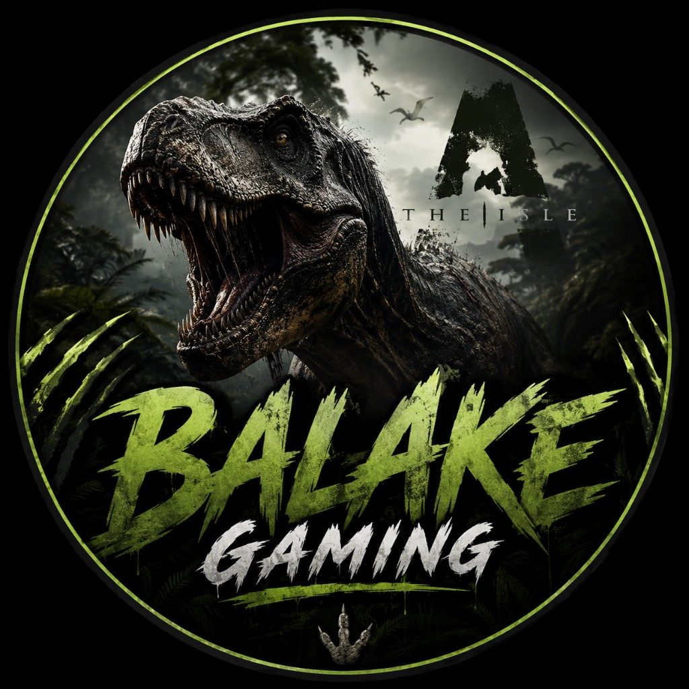

Waypoint mission
Configure pin identity, colors, and the navigation path drawn on the overlay.
Identity
Name and colors on the radar
Navigation
Guide line from your current pin
Turn pin/text off to keep the radar clear — path and rim marker can still guide you. Distance uses km at 1 km+, meters below.
How to use IsleMap
A full tour highlights every module, tab, and major setting on the real UI.
What you’ll learn
Every menu and settings group is covered
- Asset Location — click it in Status Report to copy your Lat/Long for the map
- Modules — Overlay, Destination, Game & hotkeys, Tutorial, Developer
- Overlay tabs — Style, Frame, HUD, Places, Opacity, Layout + preview
- Destination — Map pin & Waypoint identity / navigation
- Game tabs — Hotkeys, Setup, Filters, Data (+ Dev when unpackaged)
- Show map — enables the radar; it only shows while The Isle is focused
- Developer — app info and project notes
Tip: press Esc or Skip anytime. Use Back / Next between highlights.

Balake Gaming
IsleMap developer — EAC-safe Gateway radar overlay for The Isle.
Updates
Source: AxcelPrince101/IsleMap
Checking for updates…
Find Balake
Tap an ID to open the platform
- Developer
- Balake Gaming
- ID
-
balake101 - TikTok
- @balakestream
IsleMap
Clipboard-based mini-map — no game memory reads
Your pin updates when you click Asset Location in Status Report and the app reads those coordinates from the clipboard.
Safety
Designed for Easy Anti-Cheat environments
- No injection into The Isle process
- No memory scanning or game hooks
- Position updates from clipboard text only
Custom hotkeys
Click a binding, then press your shortcut. Esc cancels. Hover for details.
Quick setup
Full walkthrough lives in the Tutorial module
Use Borderless Windowed. Then copy your position from the character menu (see Asset Location below) so IsleMap can pin you on the radar. The overlay stays EAC-safe (clipboard only — no memory reads).
Asset Location (required)
How IsleMap learns where you are on Gateway
- Open your character menu in-game (Status Report).
- Find Asset Location (Lat / Long / Alt) near the mini-map.
- Click Asset Location to copy your coordinates to the clipboard.
- IsleMap reads that copy and drops your pin on the overlay map.
Without clicking Asset Location, the radar has no player pin. Click again after moving to update position (and facing, if you moved far enough).
Facing arrow
The game does not copy dino yaw — only X, Y, Z. The cone points the way you moved between Copy Location presses. Walk/run, copy again (~15m+), and the arrow updates. Standing still keeps the last facing (dimmed).
Destination pin
Open the Destination module, click the map to drop a go-to pin. Enable path line to draw a route from your Copy Location pin to the destination.
Place filters
Shortcuts are editable under the Hotkeys tab.
- —Cycle All → Water → Areas → Landmarks
- —All places
- —Water only
- —Areas only
- —Landmarks only
Area data
Built-in places ship with the app as local JSON under
src/data/. Maintainers can refresh that file with
npm run sync:areas.
Dev dummy location
Unpackaged builds only — simulates Copy Location without the game
Auto-applies Dam on overlay load. Set ISLEMAP_NO_DUMMY=1 to skip.